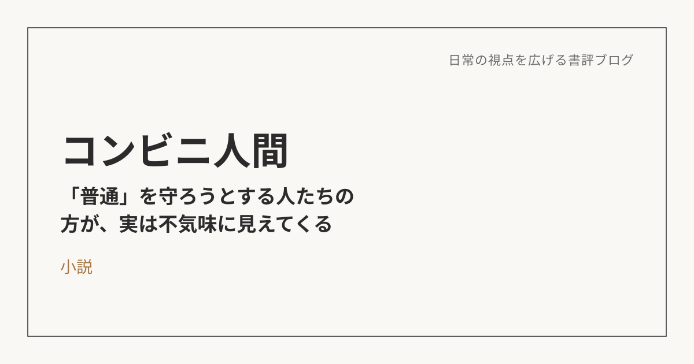

コンビニ人間――「普通」を守ろうとする人たちの方が、実は不気味に見えてくる
この本について
村田沙耶香による本作は、18年間コンビニでアルバイトを続ける独身女性・古倉恵子を主人公にした一冊。結婚も恋愛も正社員としての仕事も持たない彼女の生き方は、世間から見れば「普通」から外れている。でも本人にとっては、それが自然な生き方でしかない――というズレを描いた物語。
普通も異常も、あやうい概念でしかない
以前読んだ『正欲』とは題材が違うけれど、根っこにある問いは近い。自分たちの文化や認識とは異なる人が存在することに対して、「普通とは何か」を考えさせられる作品だ。
恵子にとっては、コンビニでの生活こそが普通であり、結婚も恋愛も、それ自体が「普通」なわけではないはずだ。どちらが普通か、という優劣の話ではない。ここから派生して、構造主義という考え方にも興味が湧いた。社会の構造が違うだけで、そこに優劣があるわけではない。片方から見れば普通だし、見方を変えれば異常にもなりうる。普通とか正常という概念は、それくらいあやうい土台の上に立っている。
「普通」を守ろうとする人たちの方が、実は不気味に見えてくる
恵子は、世間から見れば「異物」のような存在だ。36歳・未婚・コンビニのアルバイト・恋愛経験なし。親も友人も、なんとかして彼女を「普通」の型にはめようとする。
でも視点を変えると、コンビニという場所は、恵子にとって単なるバイト先ではなく、「世界のルール（マニュアル）」を理解し、自分が世界の部品として機能できる、数少ない居場所になっている。食事も睡眠も、コンビニで最高のパフォーマンスを出すために最適化する。それは、アスリートや職人の生き方と、本質的にはそう変わらない気もする。
この物語の面白いところは、「恵子を異常だと決めつけて、矯正しようとする"普通の人たち"の方が、よっぽど不気味に見えてくる」という反転にある。彼らの言う「普通」には、実はたいした論理的根拠がない。ただの同調圧力でしかない。恵子が周囲に合わせて「普通のフリ」をする場面があるけれど、それは裏を返せば、「普通の人たち」自身も、それぞれの「普通のマニュアル」に合わせて演技しているだけなんじゃないか、という強烈な皮肉に思えてくる。
自分にとっての「コンビニ」は何か
これは自分にも置き換えられる話だと思う。たとえば登山なんかがそうだ。世間から見れば、「なんでわざわざ休みの日に、疲れるとわかってる山になんて登るんだ」と思われるかもしれない。実際しんどいし、天候や体力次第では命に関わることさえある。
でも、山を登っている間の自分の中では、まったく違う感覚が動いている。ルートをどう読むか、ペース配分をどう組み立てるかを考える興奮。楽な道ではなく、あえて負荷のかかる道を選んで、それを乗り越えていく充実感。頂上に立ったときや、同行者と苦しさを分かち合ったときに生まれる、言葉にしにくい共鳴。
この、①考えることへの興奮、②あえて負荷に挑む充実感、③何かを分かち合う共鳴、という3つは、登山に限らず、自分が没頭してしまう物事に共通して流れている感覚な気がする。世間の物差しでは「大変そう」「疲れそう」に見えることでも、自分の中でこの3つが満たされているなら、それでいい。自分だけの「コンビニ」を、他人の「普通」に合わせて改装する必要はない。
※本記事はNotionに書き溜めた読書メモをもとに、AIの編集サポートを受けて構成しています。